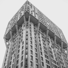
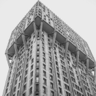

Architecture is the art and technique of designing and building, as distinguished from the skills associated with construction. It is both the process and the product of sketching, conceiving, planning, designing, and constructing buildings or other structures. The term comes from Latin architectura; from Ancient Greek ἀρχιτέκτων (arkhitéktōn) 'architect'; from ἀρχι- (arkhi-) 'chief' and τέκτων (téktōn) 'creator'. Architectural works, in the material form of buildings, are often perceived as cultural symbols and as works of art. Historical civilizations are often identified with their surviving architectural achievements.
Architectural monuments are cultural symbols that define not only a location, such as a city but also an era. They are a historical witness of a particular period as we have always strived towards grand achievements with our architecture. Architecture is a form of communication. It can tell a story, intimidate its visitors, convince someone of a specific belief or contribute to a spiritual experience.
Architecture
Up next, we encounter architecture as our fourth form of art. Architecture has always had an obvious and strong connection with art. Architecture is not only a practice of constructing buildings or other structures. It also has a powerful cultural, aesthetic, and even ideological purpose.
 
